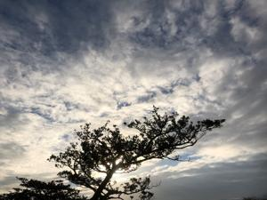
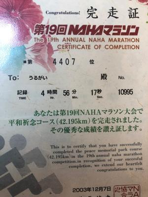

うるがいの話 ある日
最新: 右目【うるがいの話 ある日】とは 一日だけのプログです
『うるがいの話』の最新一日だけのプログで、通信料が少なく経済的だ。カニの画像をクリックすると全ての日付が載る『うるがいの話』サイトを表示します
|
|
【うるがいの話】 うるがい(ｳﾙｶﾞｲ urugai)とは、『もずくがに』の名前でとても大きくなります。 |
|---|---|
|
|
【カミマヤーの話】 猫のことを方言でマヤーといいます。カミマヤー（kamimayaa）とは、神の猫のことです。 |
|
【たながぁの音楽】 たながぁ（ﾀﾅｶﾞｰ tanagaa）とは手長えびのことで、何種類かあり大きいのは車 エビぐらいになります。 |

|
【ぶながぁの話】 ぶながぁ(ﾌﾞﾅｶﾞｰ bunagaa)とは、赤い髪の毛、赤い身体、そして身長は１ｍ２０ｃｍ ぐらい、川の蟹を食べているの目撃された。場所は沖縄県国頭郡大宜味村のと ある村僕の隣近所に住んでいる爺さんから、聞いた話です。 |
|
|
【ギーマの話】 ギーマ(giima)とは、山原の里山に咲くスズランに似た、 花を付けます。実は食べられます、 気が付くと口の周りが紫になっています。 |
2022年12月22日 (木）右目
16:03
 
休みのコドモが家に来た、そしてこの前の土曜日、仕事で段ボールを扱ってい
るときダンボールの角で目を痛めたとのこと。たまたま、眼科が開いていたの
で直ぐ診てもらったと。目の中に傷はるが、暫くすれば治るだろうとこと。こ
れを聞いた私は、右目か？と尋ねるとそうだよと答える。おお、実は昨日ヨメ
も右目が充血したため、眼科に行ったばかり（病状はたいしたことはなかった
）。右目が、連続している！と皆で話す。昨日の続き、特定検診調査結果を見
ると一箇所だけ改善しているところがあった。尿酸値基準値（３．７～７．８
）に対し５．１である。２００５年の時は７．４と基準値より高いとＨマーク
がついていた。朝と昼のお汁の効果だろうか。
『パチンコで大当たりする夢』をみる。またまた、ネットで調べる。おおおお
パチンコで大当たりする夢占いは、あなたの運気は好調だという意味です。あ
なたは、幸運に恵まれているから、パチンコで大当たりをする夢を見ます。
１５時４９分 ビットコインの総資産 ￥６、４３２（↓１９）